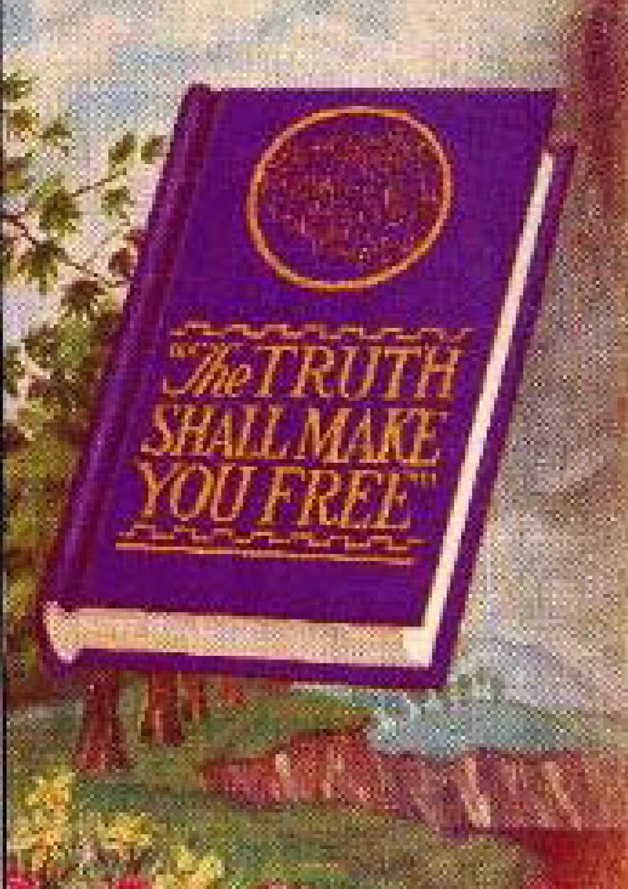

MASKS — four of them blown off! They represent faces familiar to you! But by reading this booklet you will learn, with surprise, who the persons truly are that have been hiding behind such false faces, and how greatly they have affected your chances for life and happiness.
— The Publishers.
COPYRIGHT, 1944
AND PUBLISHED BY
WATCHTOWER BIBLE AND TRACT SOCIETY, INC.
International Bible Students Association
Brooklyn, N. Y., U. S. A.
Made in the United States of America
SHALL the world go religious to prevent a third world war? Can a peace dictated by religion as the spiritual adviser be a lasting peace with unbreakable international unity and goodneighborliness? Will the second of the famous Four Freedoms, the freedom everywhere to worship God according to the dictates of conscience, be recognized, established and respected among all the family of nations? Will such grant of freedom bring a moral regeneration affecting international relations and domestic politics and business and the home? These questions now press for an answer.
No person, whether professing a religion or not, can brush such questions aside as of little bearing upon postwar affairs. The voice of "organized religion" is too loud and insistent these days to be ignored, and will have to be reckoned with in the coming days. Religion claims it will be the salvation of the world. Whether for the nations to yield to religion's demand for a controlling place in the postwar world will be for the weal or the woe of all peoples is a stern issue for consideration by all honest persons.
Thirty years ago there were men prominent in world affairs who publicly asserted that the religious organizations were responsible for the first World War and could have prevented it by a united stand for
Christian principles. Again the question arises as to religion's responsibility for the total war that has staggered all nations, and before even its end grave fears were expressed that the foundation was being laid for a third world war after a short breathing-spell of peace. If religion has twice shown itself helpless to prevent world war, if also provocative of it, will "organized religion" not bear a heavy responsibility for a third such visitation upon tortured humankind?
At the turn of the war attention was forced upon the foremost religionist of "Christendom", because certain religious publications demanded that he "be given a seat at the peace table". Hence thoughtful men call to mind the meeting held in Chicago, Illinois, August 28, 1939, four days before total war began scourging the earth, and which meeting was reported in the secular press (Buffalo Evening Express, etc.) the next day. Then, on September 1, a religious newspaper of Cincinnati, Ohio, carried this exclusive report thereof from Chicago:
An appeal has been made to Pius XII that Reichs-fuehrer Adolf Hitler be excommunicated. The resolution, sent in a cablegram to His Holiness at the height of the European war crisis, was voted by 250 delegates of national, religious, veterans', and trade union groups, banded together in the United Organizations for Defense of Democracy. Copies of the cablegram were sent to George Cardinal Mundelein of Chicago, William Cardinal O'Connell of Boston, Dennis Cardinal Dougherty of Philadelphia, and Archbishop Amleto Giovanni
Cicognani, Apostolic Delegate to the United States at Washington: "Adolf Hitler was born of Catholic parents, was baptized a Catholic, and was reared and educated as such He has not publicly up to the present time declared himself outside of the Church of his parents, and has never repudiated his membership therein, thus remaining subject to and amenable to the laws and discipline of the Church. Firmly believing that the pronouncing of excommunication upon Adolf Hitler will help the cause of freedom, Christianity, humanity, and civilization at this time, we hereby respectfully plead, appeal, and petition your Holiness publicly to proclaim and impose excommunication upon Adolf Hitler." Said one speaker at the mass meeting: "We petition to make saints, thus recognizing the power of the Papacy. If such action holds good there, why not here?"
On this request the religious newspaper commented editorially: "It is best to leave to the Church authorities all such matters. They know best all the points involved and the possible consequences."
Religious authorities took no action, and the total war was on! In Europe, Africa and the Far East weaker nations were overrun by the totalitarian Axis powers, and Americans who petitioned for the excommunication of the dictatorial aggressor had their disappointment crowned after two years with the sneak Pearl Harbor attack by the oriental Axis partner. Did not religion foresee such "possible consequences"? In the United States Senate, as reported in the Congressional Record for 1943, there rose the senator and former vice-presidential candidate from Oregon state. It was April 6, 1943, and before his colleagues he asked the president of the Senate that a letter written by a Roman Catholic of Irish descent and addressed to the editor of the Portland Oregonian and published therein April 3, be printed in the Appendix of the Record. No objection being voiced, the letter was ordered to be printed as requested. The printing (on page A1782) reads:
To the EDITOR:
To his everlasting credit, Cardinal Dougherty, head of the Catholic Church in the United States, asked every American to pray for the defeat of the Axis armies. Therefore, I beg every church, labor, fraternal, and business organization to pass resolutions congratulating his excellency and also appeal to him to request the correct German and Italian authorities to excommunicate Hitler and Mussolini.
It is the studied opinion of the writer (a member of one of Ireland's oldest Catholic families) that both request and appeal would be promptly granted.
This done (since no Catholic will ever obey orders from an excommunicate), millions of liberty-loving Catholics, having been bayoneted into the Axis armies, would revolt and sabotage the military machines of Hitler and Mussolini, thus ending the world's most horrible war, to the eternal glory of their church.
[Signed] T — B —
Again no such religious action followed, except a 14-minute world-broadcast by the Roman pontiff in Italian over the Vatican radio on September 1, 1943, for a negotiated peace, with "generosity" granted by the victors. Two days later it became necessary for the British-American forces to invade Italy's toe, and on September 8 the responsible Italian authorities yielded to the United Nations' demand for an "unconditional surrender".
More recently the New York Times bore an AP dispatch from Washington, D.C., dated January 16, and quoting from the report published by the Foreign Policy Association. In it the Association's assistant president said: "Critics (of the Papacy) both friendly and hostile have forecast a period of unprecedented anti-clericalism in Italy, believing that the long association of the Vatican with fascism will reap its harvest of hatred and even of persecution." Observing that the events since invasion of Italy made that development less likely, the report added: "The papal record of practical statesmanship is less impressive." —New York Times, January 17, 1944.
As we consider what might have been done by those who wield great power over political rulers and the people and who command widespread religious submission, we cannot think that it is Christianity that has failed. It is religion; all the nations of "Christendom" reaping the consequences of the global war, either directly or indirectly, are religious nations. The great Teacher, who is "the Prince of Peace", foretold the wars and rumors of war at the end of the world, but did not say that these would come as a result of nations' following him. Quite to the contrary, he forewarned his disciples that then "ye shall be hated of all nations for my name's sake". (Matthew 24: 7-9) Furthermore, the nations have been doing that which Christ's apostle warned against, saying: "But if ye bite and devour one another, take heed that ye be not consumed one of another. This I say then, Walk in the spirit, and ye shall not fulfil the lust of the flesh." (Galatians 5:15, 16) Nothing is plainer than that the nations of "Christendom" have been following, not the Founder of Christianity, but the religious clergy as spiritual guides. Had the clergy been treading in the steps of Christ, their skirts would be clear of accountability for the sorrows of the peoples. But the facts show that they have been playing to be the favorites and bosom companions of the political rulers of the world and have sought to please men rather than God. They have been blind to the way that Jesus Christ walked. And Jesus said: "Let them alone: they be blind leaders of the blind. And if the blind lead the blind, both shall fall into the ditch." (Matthew 15:14) It is therefore certain that disaster awaits all who blindly follow religion. Those who follow the true Christianity will avoid the ditch and live in prosperity.
For at least fifteen centuries "organized religion" has been sowing its seed by doctrine and by deed, and she is about due to reap a crop. She is the most powerful religious force on earth, and also the most responsible, because she claims to represent the only true and living
God. She is to be judged by the written Word of the One whom she claims to serve and represent, and that Word is the Holy Scriptures, the Bible. The words of a prophet of that Book well describe the position of the religionists today: "The wise men are ashamed, they are dismayed and taken: lo, they have rejected the word of the LORD; and what wisdom is in them?" (Jeremiah 8:9) Religious wise-men have paid no heed to the instruction that is contained in sacred history. They have gone in the very way of error and of final destruction that the Bible history warns against in resounding words. As a result they have led the rulers and the people into the trap of man's greatest enemy.
Secular history was recorded and is consulted that those who follow after may study over the mistakes others made in the past and may avoid them. Worldly history is respected with such attention and close scrutiny, but, when it comes to Bible history, and especially Bible prophecy which is a preview of coming history on a worldwide scale, the religious clergy of "Christendom" disregard it carelessly and say it is dead history and sheds no light on the world crisis of the present. But the apostle Paul, that faithful upholder and example of Christianity, spoke otherwise. Said he concerning the Bible history of those professing to be God's people: "Now these things were our examples, to the intent we should not lust after evil things, as they also lusted.... Now all these things
happened unto them for ensamples: and they are written for our admonition, upon whom the ends of the world are come. Wherefore let him that thinketh he standeth take heed lest he fall." (1 Corinthians 10: 6, 11, 12) Another recognized authority on Bible history, namely, " the apostle Peter, said: "We have also a more sure word of prophecy; whereunto ye do well that ye take heed, as unto a light that shineth in a dark place, until the day dawn, and the day star arise in your hearts: knowing this first, that no prophecy of the scripture is of any private interpretation. For the prophecy came not in old time by the will of man: but holy men of God spake as they were moved by the holy [spirit]." — 2 Peter 1:19-21.
Obeying Peter's inspired advice, and taking heed to the prophecies in the light of modern-day events and conditions, our eyes are caught by a vivid description of what "Christendom" is today. At the same time it warns us of the fate that awaits "organized religion". Because the vast majority of the religionists of "Christendom" are adherents to Vatican City in their allegiance, we shall hereinafter quote all scripture texts from the Roman Catholic Douay Version Bible, except where our citations indicate otherwise.
Turn now to this ancient preview of the present-day "Christendom", "organized religion," and hear what the great Judge of heaven says concerning it and its sure end. It is found in the prophecy of Hosea, chapter eight, and is addressed to a very religious nation, Israel. Ten tribes thereof, under the leadership of the tribe of Ephraim, broke away from the king of Jerusalem and from the worship of Jehovah God at his temple in that city, and set up their own government at the capital city of Samaria. They also invented a religion of their own, with images of calves and a priesthood. Shortly before Israel's destruction, the Lord God Jehovah, by his prophet Hosea, caused this expose and warning to be declared, and as it is read have "Christendom" before your mind:
Let there be a trumpet in thy throat like an eagle upon the house of the Lord: because they have transgressed my covenant, and have violated my law. They shall call upon me: O my God, we, Israel, know thee.
Israel hath cast off the thing that is good, the enemy shall pursue him. They have reigned, but not by me: they have been princes, and I knew not: of their silver, and their gold they have made idols to themselves, that they might perish. Thy calf, o Samaria, is cast off, my wrath is kindled against them. How long will they be incapable of being cleansed? For itself also is the invention of Israel: a workman made it, and it is no god: for the calf of Samaria shall be turned to spiders' webs.
FOR THEY SHALL SOW WIND, AND REAP A WHIRLWIND, there is no standing stalk in it, the bud shall yield no meal; and if it should yield, strangers shall eat it. Israel is swallowed up: now is he become among the nations like an unclean vessel. For they are gone up to Assyria [for an alliance with that heathen absolutist nation], a wild ass alone by himself: Ephraim hathgiven gifts to his lovers. But even though they shall have hired the nations, now will I gather them together: and they shall rest a while from the burden of the king, and the princes. Because Ephraim hath made many altars to sin: altars are become to him unto sin.
I shall write to him my manifold laws, which have been accounted as foreign. They shall offer victims, they shall sacrifice flesh, and shall eat it, and the Lord will not receive them: now will he remember their iniquity, and will visit their sins: they shall return to Egypt. And Israel hath forgotten his Maker, and hath built temples: and Juda hath built many fenced cities: and I will send a fire upon his cities, and it shall devour the houses thereof. — Hosea 8:1-14.
Modern "Christendom" is filled with temples, altars and images, and with clergymen of hundreds of different religious sects who offer up religious sacrifices. Yet no part of the earth has suffered worse than "Christendom" the devastating effects of global war. For this the religious clergy excuse themselves, saying it is because the people have neglected religion, and that what the people need in the postwar world is "more religion". But can "organized religion" of "Christendom", which claims a religious population of half a billion organizationmembers, justify herself thus lightly, and shift the blame to others, and say she was powerless or unable to exercise sufficient influence and restraint? In answer, God's Word lays down the rule for judgment, saying: "Whatsoever a man soweth, that shall he also reap." Therefore, had "organized religion" sown God's truth and righteousness, she would surely have reaped the blessings promised in His Word. "There is no peace to the wicked, saith the Lord God." — Isaias 48: 22; 57:21.
"Organized religion" professes to be in a covenant of obedience with God and thereby to have relationship with him. It must be, then, that "Christendom's" plight today is not because the people in general have neglected religion, but because the religionists have neglected the Word of the Lord God and have practiced religion instead of Christianity, and hence do not have the spirit of the Lord God. To verify that, compare the works of "organized religion" with the following words of the apostle Paul, and determine for yourself whether religion's fruitage is the works of the flesh or the works of the spirit. Galatians 5:19-23 reads: "Now the works of the flesh are manifest, which are fornication, uncleanness, immodesty, luxury, idolatry, witchcrafts, enmities, contentions, emulations, wraths, quarrels, dissensions, sects, envies, murders, drunkenness, revellings, and such like. Of the which I foretell you, as I have foretold to you, that they who do such things shall not obtain the kingdom of God. But the fruit of the spirit is, charity, joy, peace, patience, benignity, goodness, longanimity, mildness, faith, modesty, continency, chastity." Every honest observing person will admit that "Christendom" stands indicted as reaping the fruitage of the "works of the flesh". Since at the same time she bears Christ's name and professes to practice and teach Christianity, she has brought great reproach upon the Lord God and upon his Son Jesus Christ. As a cover she
has quoted some sacred scriptures.
The fact that religion has in reality been practicing demonism, but has disguised it with Christian names and with the clergy's approval, even the spokesmen of the reputed "church" organizations admit. The famous religionist John Henry Newman, who was created a cardinal by Leo XIII in 1879, published in 1878 what he called an Essay on the Development of Christian Doctrine. In chapter eight he raises the question concerning the adoption of pagan customs and says concerning the Roman Catholic organization: "Had it the power, while keeping its own identity, of absorbing its antagonists, as Aaron's rod, according to St. Jerome's illustration, devoured the rods of the sorcerers of Egypt? Did it incorporate them into itself, or was it dissolved into them? Did it assimilate them into its own substance, or, keeping its name, was it simply infected by them?" Continuing, the cardinal says in answer:
"Confiding then in the power of Christianity to resist the infection of evil, and to transmute the very instruments and appendages of DEMON-WORSHIP to an evangelical use, and feeling also that these usages had originally come from primitive revelations and from the instinct of nature, though they had been corrupted; and that they must invent what they needed, if they did not use what they found; and that they were moreover possessed of the very archetypes, of which paganism attempted the shadows; the rulers of the [Roman
Catholic] Church from early times were prepared, should the occasion arise, to adopt, or imitate, or sanction the existing rites and customs of the populace, as well as the philosophy of the educated class."
Then the cardinal makes this admission of religion's demonic origin: "The use of temples, and these dedicated to particular saints, and ornamented on occasions with branches of trees; incense, lamps, and candles; votive offerings on recovery from illness; holy water; asylums; holydays and seasons, use of calendars, processions, blessings on the fields; sacerdotal vestments, the tonsure, the ring in marriage, turning to the East, images at a later date, perhaps the ecclesiastical chant, and the [song] Kyrie Eleison, ARE ALL OF PAGAN ORIGIN, AND SANCTIFIED BY THEIR ADOPTION INTO THE CHURCH." —Pages 355, 371, 373, Edition of 1881.
The Holy Scriptures strictly forbid demon worship. Says the Lord God to his covenant people: "When thou art come into the land which the Lord thy God shall give thee, beware lest thou have a mind to IMITATE the abominations of those nations." (Deuteronomy 7:25,26; 18:9-14) Instead of telling his people to adopt and sanctify such things into the Lord's organization (an impossible thing!), God's Word by his prophet says: "Touch no unclean thing: go out of the midst of her, be ye clean, you that carry the vessels of the Lord." And Christ's apostle repeats this command to the true church. (Isaias 52:11; 2 Corinthians 6:16-18) He says: "And what agreement hath the temple of God with idols? For you are the temple of the living God; as God saith: I will dwell in them, and walk among them; and I will be their God, and they shall be my people. Wherefore, Go out from among them, and be ye separate, saith the Lord, and touch not the unclean thing: and I will receive you; and I will be a Father to you; and you shall be my sons and daughters, saith the Lord Almighty."
The Great Leader in Christianity, Jesus Christ, said of the Holy Scriptures: "Sanctify them in truth [not in demonology]. Thy word is truth." (John 17:17) By God's Word, the Holy Scriptures, we can therefore discover what is religion or demonism, even though counterfeiting as Christianity; and can also determine what is the truth and hence the pure Christianity. In the love of the truth, every seeker of eternal life and salvation will now take up an examination of the most prominent doctrines and practices of "organized religion", to satisfy himself whether such are disguised demon-religion or are the genuine things of Christianity.
The death of millions due to causes precipitated during the global war has aroused a widespread interest in the state of the dead, and likewise caused an increase in the performance of religious rites for the dead. Properly, then, in the interests of gaining the truth, the doctrine of "purgatory", as taught by the leading advocate thereof, comes under inspection. Millions of sincere persons have been induced to believe in this doctrine. For the benefit of those unacquainted with it, it is briefly this: That when a Catholic dies he is not in fact dead, but his soul is conscious in a place of temporary punishment called "purgatory"; and the duration of his punishment in "purgatory" may be shortened, and the soul detained therein may be helped by suffrages, or prayers, and by sacrifices of the living. Under the imprimatur of the archbishop of New York, Volume XII of The Catholic Encyclopedia says, under the subhead "Purgatory":
I. CATHOLIC DOCTRINE. — Purgatory (Latin, purgare, to make clean, to purify) in accordance with Catholic teaching is a place or condition of temporal punishment for those who, departing this life in God's grace, are not entirely free from venial faults, or have not fully paid the satisfaction due to their transgressions.... The
souls therein detained are helped by the suffrages of the faithful, but principally by the acceptable sacrifice of the altar.
James Cardinal Gibbons, famous Catholic authority, says, in Chapter XVI of his book The Faith of Our Fathers:
The Catholic Church teaches that, besides a place of eternal torments for the wicked and of everlasting rest for the righteous, there exists in the next life a middle state of temporary punishment, allotted for those who have died in venial sin, or who have not satisfied the justice of God for sins already forgiven. She also teaches us that, although the souls consigned to this intermediate state, commonly called purgatory, cannot help themselves, they may be aided by the suffrages of the faithful on earth. "The existence of purgatory naturally implies the correlative dogma — the utility of praying for the dead — for the souls consigned to this middle state have not reached the term of their journey. They are still exiles from heaven and fit subjects for Divine clemency. — Page 205, 78th edition.
For the doctrine of "purgatory" to be true, the indisputable evidence from God's Word of truth must show (a) that every man has a soul that is separate and detachable from the body; (b) that there is no death of the human soul or creature, only the body dying and the soul continuing to live; (c) that the human dead are conscious in another world; and (d) that those in "purgatory" can be helped and benefited by money contributions made by their friends on earth and applied toward religious prayers and masses.
Should the "purgatory" doctrine prove false, then billions of persons over many centuries have been deceived and held in bondage by fear. They have been wrongfully induced to turn over money and property to religious priests and have been misled concerning the means of life everlasting. Whether you are a Catholic or a Protestant or a Jew, you will not be spiritually hurt by the truth on this subject, because the great Martyr for truth said: "If you continue in my word, you shall be my disciples indeed. And you shall know the truth, and the truth shall make you free." — John 8: 31, 32.
Christ Jesus and his apostles preached the Holy Scriptures to the common people in their language. The Bible was not written for the benefit of only a few who are called "the clergy" and who can read dead languages. God created and preserved the Bible for the benefit of all those persons who love Him and desire to serve Him. The apostle Paul wrote to the young man Timothy: "From thy infancy thou hast known the holy scriptures, which can instruct thee to salvation, by the faith which is in Christ Jesus. All scripture, inspired of God, is profitable to teach, to reprove, to correct, to instruct in justice, that the man of God may be perfect, furnished to every good work." (2 Timothy 3:15-17) The apostle Peter says the Scriptures are not of private interpretation. Hence, to detect an interpretation that is private and misleading, we must follow the rule stated by the prophet Isaiah: "To the law rather, and to the testimony. And if they speak not according to this word, they shall not have the morning light." (Isaias 8: 20) Thus doing, we apply to the texts of the Holy Scriptures facts well known to be true and see whether the facts and Scriptures agree. If they agree, then the Scriptures are correctly interpreted by such facts as God caused to appear. Let us now abide by this rule.
Does man have a soul separate and, at death, detachable from the body? No; for the Bible defines soul to mean both the human creature himself and also the conscious, breathing existence he enjoys when alive. A man is a soul. Genesis 2:7 reads: "And the Lord God formed man of the slime of the earth: and breathed into his face the breath of life, and man became a living soul." The man's body and the breath God breathed into his nostrils to animate the body do both together constitute the soul, the creature that lives. Concerning the other meaning of soul as the conscious, breathing existence of a living creature, 3 Kings 17:21, 22 says that the prophet Elijah "cried to the Lord, and said: O Lord my God, let the soul of this child, I beseech thee, return into his body. And the Lord heard the voice of Elias: and the soul of the child returned into him, and he revived". Also Psalm 114: 8, 9 reads: "For he hath delivered my soul from death: . . . I will please the Lord in the land of the living."
Is it true that the body dies and the soul lives on? No. The first lie, as told by the Devil to Eve, was: "No, you shall not die the death." (Genesis 3:4) That is, 'There is no death.' Eve being deceived by that lie, and Adam joining her in disobeying God, both were sentenced to death and died. Jesus well said of the Devil: "He was a murderer ... he is a liar." (John 8:44) Why? Because the sinner soul dies. Ezechiel 18:4, 20 reads: "The soul that sinneth, the same shall die." Said God to the "living soul", Adam: "Dust thou art, and into dust thou shalt return." — Genesis 3:19.
When a man dies, is the soul conscious anywhere thereafter? No. It is the living soul or creature that is conscious; and when a man or soul dies, his breathing, conscious existence ceases. Such is the indisputable Bible truth: "For the living know that they shall die, but the dead know nothing more, neither have they a reward any more: for the memory of them is forgotten. Whatsoever thy hand is able to do, do it earnestly: for neither work, nor reason, nor wisdom, nor knowledge shall be in hell, whither thou art hastening. " (Ecclesiastes 9:5, 10) The dead man has no more thoughts anywhere: "His spirit shall go forth, and he shall return into his earth: in that day all their thoughts shall perish. " (Psalm 145:4) "The dead shall not praise thee, o Lord: nor any of them that go down to hell. But we that live bless the Lord." — Psalm 113:17,18.
It is well known by all those of the "Catholic population" that money is continually solicited and received by the religious clergy, upon the claim that such money contributed is used in connection with masses and prayers for the benefit of those said to be in "purgatory". Even The Catholic Encyclopedia admits that a mass is rarely said free. Millions of sincere, hardworking persons have responded to clergy appeals by letter, by ads in magazines and by verbal requests, and have contributed billions of dollars to help their relatives and friends, under the impression that these were in "purgatory". Hence the question: Will contributions of money and the assisting at the sacrifice of religious masses and the layman's prayers or the priest's prayers aid or benefit the dead and shorten the length of punishment of their souls in "purgatory"? Not at all; for the reason that there is no one in "purgatory". None of the dead ever went to a "purgatory". Jesus did not locate any dead in a "purgatory", but said: "Wonder not at this;
for the hour cometh, wherein all that are in the graves shall hear the voice of the Son of God. And they . . . shall come forth unto the resurrection." They are awaiting a resurrection, and not masses. — John 5: 28, 29.
Nowhere in any Catholic Bible translation is "purgatory" even named. No Scripture text makes mention of a soul in "purgatory". Who, then, invented "purgatory"? From the years 590 to 604 Gregory, known as "Gregory the Great", served as pope of the Roman Catholic Hierarchy. He was the first man to 'discover purgatory' and to advance it as a place of fiery elements to torment souls. Under the title "Purgatory", Volume VIII of the McClintock and Strong Cyclopaedia says: "But whatever the views of some Church fathers on the subject, as a doctrine it was unknown in the Christian Church for the first 600 years, and it does not appear to have been made an article of faith until the 10th century.... 'Purgatory as a
burning-away of sins,' said Doellinger at the Bonn Conference of Old Catholics in 1875, 'was an idea unknown in the East as well as the West till Gregory the Great introduced it.... Gregory the Great added the
idea of a tormenting fire.' " — Edition of 1879.
The "purgatory" doctrine finds basis only in the opinion and interpretation of religious men, that is, in the voice or opinion of men who lived centuries ago and whom religion calls "fathers". To quote again Cardinal Gibbons in his above-named book, concerning "purgatory": "This interpretation is not mine. It is the unanimous voice of the Fathers of Christendom. " (Page 208) Then he gives the names of some of the early men in religious circles who advanced the theory. He also cites in support of the "purgatory" theory the prayer books of his organization and also the practice of Jewish rabbis in praying for the dead. Are such references of any weight or support toward the "purgatory" idea? Is the fact that centuries ago men of religion taught certain things as to "purgatory" any proof of its existence? As to the value of unscriptural traditions of religious "fathers", let Jesus answer. In his day the Pharisaical clergy based their teachings upon tradition. They said to Jesus: "Why do thy disciples transgress the tradition of the ancients?" "But he answering, said to them: Why do you also transgress the commandment of God for your tradition? ... you have made void the commandment of God for your tradition. Hypocrites, well hath Isaias prophesied of you, saying: This people honoureth me with their lips: but their heart is far from me. And in vain do they worship me, teaching doctrines and commandments of men." — Matthew 15:1-9.
Jesus there showed that teachings of religious men make void the Word of God. The apostle Paul expressed the same fact. Paul, when he practiced the Jews' religion, was guided by the tradition of the elders or fathers. When he became a true follower of Christ Jesus he cast away religion and its man-made traditions and followed only the commandments of God as taught by Jesus Christ. So he says, at Galatians 1:10-16. Then, at Colossians 2: 8, he specifically warns all Christians to avoid religious teachings and to adhere solely to the teaching of Christ Jesus: "Beware lest any man cheat you by philosophy, and vain deceit; according to the tradition of men, according to the elements of the world, and not according to Christ."
Who is chargeable and responsible for that doctrine of "purgatory", which has deceived so many persons and still deceives. The father and promulgator of the "purgatory" lie is none other than the Devil himself. It was taught by the Buddhist priests of India long before the pope of Rome sprang it upon "Christendom". The Devil has overreached men who claim to be "successors of the apostles" and has induced such to believe and to teach the "purgatory" doctrine. His purpose in so doing is to turn man's attention away from Jehovah God, thereby expecting that he could lead all mankind into destruction. This wicked one, whom the Scriptures call "that old serpent, which is the Devil, and Satan", is the archdeceiver and chief enemy of God and man. Both Satan and his earthly servants claim to be the enlighteners of the people, and these ministers often pose as the representatives of Christ. They thus deceive and practice fraud upon the credulous people. Concerning them it is written, at 2 Corinthians 11:1315: "Such false apostles are deceitful workmen, transforming themselves into the apostles of Christ. And no wonder: for Satan himself transformeth himself into an angel of light. Therefore it is no great thing if his ministers be transformed as the ministers of justice, whose end shall be according to their works."
But does not the Catholic Version Bible support the theory of "conscious souls suffering in 'purgatory'"? It does not. The Catholic Bible retains in its canon the two books of Maccabees, but by others these are omitted from among the authentic inspired books as being spurious or apocryphal. The text usually quoted to bolster up the "purgatory" theory is 2 Machabees 12:43-46, which reads: "And making a gathering [collection], he [Judas Machabeus] sent twelve thousand drachms of silver to Jerusalem for sacrifice to be offered for the sins of the dead, thinking well and religiously concerning the resurrection, (for if he had not hoped that they that were slain should rise again, it would have seemed superfluous and vain to pray for the dead) and because he considered that they who had fallen asleep with godliness, had great grace laid up for them. It is therefore a holy and wholesome thought to pray for the dead, that they may be loosed from sins." However, that text mentions no 'purgatory fire' or suffering souls. Rather it supports the Bible truth that "there shall be a resurrection of the just and unjust". — Acts 24:15.
Other texts of the Bible which conclusively prove there are no living souls tormented in any place called
"purgatory" include Ezechiel 18:4, reading: "Behold all souls are mine: as the soul of the father, so also the soul of the son is mine: the soul that sinneth, the same shall die." Also Ecclesiastes 9:10: '"Whatsoever thy hand is able to do, do it earnestly: for neither work, nor reason, nor wisdom, nor knowledge shall be in hell, whither thou art hastening." Also Isaias 38:18: "For hell shall not confess to thee, neither shall death praise thee." Therefore the doctrine of eternal torment in a hell of fire and brimstone falls with the "purgatory" doctrine. Both doctrines are of demon source and are based upon a base lie, and both fall together.
The dead in the graves are in the condition of nonexistence. God's promise concerning them is that they shall be awakened out of death. The sacrificial death and the resurrection of Jesus Christ is a guarantee that those dead shall be raised up again. Concerning this Jesus said: "The hour cometh, wherein all that are in the graves shall hear the voice of the Son of God. And they that have done good things shall come forth unto the resurrection of life; but they that have done evil, unto the resurrection of judgment." (John 5:28,29) Had any of such dead been in "purgatory" Jesus would have said so. Resurrection means a raising up again to life. If the creature or soul is in "purgatory", there conscious and suffering, he must be alive. If so, there could be no resurrection, because a live creature cannot be resurrected. Therefore religion's doctrine of "purgatory" makes void the Word of God concerning the resurrection of the dead. The "purgatory" theory being founded upon traditions of men, that alone proves it is an invention of the Devil used by him for the very purpose of deceiving men and holding them in ignorance respecting God's purpose to resurrect the dead.
The so-called "sacrifice of the mass" is admitted by priests to be a bloodless one. That fact in itself would make it ineffective toward God. Regarding this fact it is written in God's Word: "The life of the flesh is in the blood: and I have given it to you, that you may make atonement with it upon the altar for your souls, and the blood may be for an expiation of the soul." (Leviticus 17:11) Therefore the apostle Paul says, at Hebrews 9: 22: "And without shedding of blood there is no remission." Thus it occurs that trusting religionists contribute their money for masses, believing it is an "offering" in behalf of their loved ones in "purgatory", and that, based upon such belief, prayers and masses are offered for the souls in "purgatory". But such prayers do no good, for the reason that there are no souls in "purgatory"; and likewise the mass does no good, because it is a bloodless offering on a religious altar.
So, then, the sum of the evidence is this: The practice of saying prayers for souls supposed to be in "purgatory" is a religious practice handed down from generations past and based upon tradition, but not supported by God's Word of truth. It makes void his Word, and is therefore false. Regardless of when and from whom it originated, it is diabolical, deceptive, fraudulent, and working injury to mankind. It results in holding sincere persons in restraint to a religious organization, and therefore deprives them of true Christian liberty. Improperly and unjustly it takes away from the people their hard-earned money, for which they receive nothing. It is therefore injurious to them and their property. Above all, it hides from them the great truth of God's provision for mankind by which believing men may obtain everlasting life. Therefore the "purgatory" doctrine endangers one's everlasting life and salvation.
God's provision for salvation as set forth in his own Word is this: All men, by reason of Adam's sin, inherited death. Christ Jesus, by shedding his lifeblood, provided redemption of man from sin and death. All who believe God's Word and believe on his Son and who devote themselves to God and his Christ and continue faithful to their vows, have God's promise of resurrection to life. No other means is there by which man can get life, said Peter. (Acts 4:12) Satan the Devil well knows that for man to follow any other course than that pointed out in God's Word means everlasting death to man. Therefore the Devil invents fraudulent doctrines and causes men to practice religion in order to keep the truth hidden from them. You, the reader, must therefore determine whether you wish to follow the traditions of religionists, originating with the Devil, and suffer eternal consequences, or wish to believe God and Christ Jesus and find life everlasting in happiness through his Kingdom.
Surely, you will now say, what Cardinal Newman says about adopting the doctrines and appendages of demonism could not apply to the "trinity". It is not sacrilegious to investigate and see. The Roman Catholic teaching concerning the "trinity", and in which teaching the Protestant sects agree, is stated in The Catholic Encyclopedia under the heading "TRINITY, The Blessed", as follows:
I. THE DOGMA OF THE TRINITY. — The Trinity is the term employed to signify the central doctrine of the Christian religion — the truth that in the unity of the Godhead there are three Persons, the Father, the Son, and the Holy Spirit, these three Persons being truly distinct one from another. Thus, in the words of the Athanasian Creed: 'The Father is God, the Son is God, and the Holy Spirit is God, and yet there are not three Gods, but one God.'
That doctrine is wholly unreasonable, because it is impossible for three persons to exist in one. But even if we be denied the privilege of using our reason, we find no scripture to support the "trinity" doctrine. By the following further quotation from The Catholic Encyclopedia, Volume XV, under the subhead "Trinity", you will clearly see that the doctrine is based upon religious tradition:
The Persons are co-eternal and co-equal: all alike are uncreated and omnipotent.... In Scripture there is as yet no single term by which the three divine Persons are denoted together. The word Trias (of which the Latin trinitas is a translation) is first found in Theophilus of Antioch about A.D. 180.
Tertullian, a religionist of Carthage, Africa, who lived at that same time, was the one who introduced the term trinitas into Latin ecclesiastical writings.
Now note what the Word of God, his Bible, says to prove there is one God Almighty, Jehovah, and one Lord and Savior, Jesus Christ. There is one God, the Supreme One, the Most High. To the prophet Moses he said: "I am the Lord, that appeared to Abraham, to Isaac, and to Jacob, by the name of God Almighty; and my name ADONAI I did not shew them." (Exodus 6: 2, 3) The footnote on this verse in the Catholic Douay Version admits that in the Hebrew original text the name translated Adonai is made up of the four Hebrew letters Jod, He, Vau, He, commonly pronounced "Jehovah". Hence in the American Standard Version of the Bible the name Jehovah occurs more than 6,600 times, from Genesis to Malachi, as in the following Scripture texts: "I am Jehovah thy God." (Exodus 20:2) "I am Jehovah, that is my name." (Isaiah 42: 8) "I am Jehovah, and there is none else; besides me there is no God." (Isaiah 45:5) "Yea, let them be confounded and perish; that they may know that thou alone, whose name is Jehovah, art the Most High over all the earth." (Psalm 83:17,18) The apostle Paul says there is "one God and Father of all, who is above all, and through all, and in us all". (Ephesians 4:6) "Yet to us there is but one God, the Father, of whom are all things, and we unto him; and one Lord Jesus Christ, by whom are all things, and we by him." (1 Corinthians 8:6) Jehovah is the everlasting King, without beginning and without end. — Jeremias 10:10; Psalm 89:2.
The Son of God, who became Christ Jesus, was originally called 'The Word of God'. (John 1:1,14) As such he said: "The Lord possessed me in the beginning of his ways, before he made any thing from the beginning. " (Proverbs 8:22) The Word was the beginning of all created things, and thereafter as God's Servant he created all other things according to Jehovah's will. (John 1: 2, 3) Note below the testimony of Jesus and his apostles which proves beyond all doubt that Jehovah God is the Creator and Father, and that his Son, The Word, is his first creation. At Apocalypse 3:14 the glorified Jesus said concerning himself: "These things saith the Amen, the faithful and true witness, who is the beginning of the creation of God." Jesus further said: "I am come in the name of my Father." (John 5:43) "Because I came down from heaven, not to do my own will, but the will of him that sent me." (John 6: 38) "For I have not spoken of myself; but the Father who sent me, he gave me commandment what I should say, and what I should speak. " (John 12:49) "For the Father is greater than I." (John 14:28) "For as the Father hath life in himself, so he hath given to the Son also to have life in himself." — John 5:26.
Such sayings of Christ Jesus the Hierarchy cannot gainsay, but the apostle Paul backs up such sayings, when he exhorts Timothy: "Keep the commandment without spot, blameless, unto the coming of our Lord Jesus Christ, which in his times he shall shew who is the Blessed and only Mighty, the King of kings, and Lord of lords; who only hath immortality, and inhabiteth light inaccessible, whom no man hath seen, nor can see." — 1 Timothy 6:14-16.
Shortly before being nailed to the tree Jesus prayed to his Father Jehovah God: "Father, the hour is come, glorify thy Son, that thy Son may glorify thee. As thou hast given him power over all flesh, that he may give eternal life to all whom thou hast given him. Now this is eternal life: That they may know thee, the only true God, and Jesus Christ, whom thou hast sent." (John 17:1-3) If Jehovah and Jesus are one in person, equal in power and glory, why should Jesus pray to Jehovah? It would be praying to himself. In the same prayer Jesus prayed: "And not for them only do I pray, but for them also who through their word shall believe in me; that they all may be one, as thou, Father, in me, and I in thee; that they also may be one in us; that the world may believe that thou hast sent me. And the glory which thou hast given me, I have given to them; that they may be one, as we also are one." (John 17:20-22) Jesus' own words prove that the oneness does not mean one in person or substance, but
that he and Jehovah God are always working together in full harmony and at unity, and that all those of his true church must likewise be at unity.
Moreover, Jesus mentioned only two, Jehovah and himself, but no "holy ghost". That expression is correctly rendered in the modern Catholic translation as "holy spirit". It refers to no person. It means the active force of the Lord God, which is invisible and which force is entirely devoted to righteousness or holiness, hence a "holy" spirit or energy. As regards the text of 1 John 5:7, 8, even the footnote of the modern Catholic "New Testament" states: "According to the evidence of many manuscripts, and the majority of commentators, these verses should read: 'And there are three who give testimony, the Spirit, and the water, and the blood; and these three are one.'" Among such most ancient manuscripts is Vatican Manuscript No. 1209, now at the Vatican Library.
If Christ Jesus had been one in person and substance with God Jehovah, who is from everlasting and immortal, Christ Jesus could not have died as the ransom price for humankind. The doctrine of the "trinity" is drawn from heathen religions, which taught a trinity of demon gods, such as the Egyptian trinity of Isis, Horus and Seb (IHS), long before Christ's birth. Hence, too, the "trinity" doctrine is borrowed from demonism. The only means of salvation for humankind is through Jesus' ransom sacrifice. God provided redemption through his Son's death, and raised him out of death to be an immortal Spirit and to be Lord and King of the New World, which he shall rule in righteousness. (1 Peter 3:18; Matthew 20:28) But even as King, the Son of God is not equal with his Father or as high: "And when all things shall be subdued unto him, then the Son also himself shall be subject unto him that put all things under him, that God may be all in all." — 1 Corinthians 15:28.
The religious Hierarchy teaches that the Lord Jesus Christ conferred upon Peter the place of spiritual supremacy in His church and that since then such supremacy has always resided in the popes of Rome. To quote again from Cardinal Gibbons' book:
The Catholic Church teaches also, that our Lord conferred on St. Peter the first place of honor and jurisdiction in the government of His whole Church, and that the same spiritual supremacy has always resided in the Popes, or Bishops of Rome, as being the successors of St. Peter. Consequently, to be true followers of Christ all Christians, both among the clergy and the laity, must be in communion with the See of Rome, where Peter rules in the person of his successor. — Page 92.
The sum of Scriptural evidence in the Bible is against such religious interpretation that the Lord conferred upon Peter the place of supremacy in His church on earth, and that Peter has had successors till now. The "proof" text relied upon to support the idea of Peter's supremacy is that part of Matthew 16:18 which says:
"Upon this rock I will build my church." It becomes, then, of first importance to ascertain what is meant by "this rock", and then to determine what is the building erected on it. No one can deny that the word "rock" is used symbolically by Jesus.
In the Bible Jehovah God is symbolically mentioned as the great Rock, because He is the eternal and immovable One, from everlasting to everlasting. (Psalm 89:2) Concerning him 2 Kings 22: 2 reads: "The Lord is my rock, and my strength, and my saviour." According to the original Hebrew, Deuteronomy 32: 3,4 reads: "For I will proclaim the name of Jehovah: Ascribe ye greatness unto our God. The Rock, his work is perfect." (Am. Stan. Ver.) Also 1 Samuel 2: 2 reads: "There is none holy as the Lord: for there is none beside thee: neither is there any rock like our God." Also Psalm 62:1,2 reads: "Truly my soul waiteth upon God: from him cometh my salvation. He only is my rock and my salvation." — Auth. Ver.
When Jehovah God expelled sinner man from Eden, he gave his word that He would raise up a Seed which he would use to destroy Satan and is organization. Later God gave his word to he patriarch Abraham that through that same Seed God would provide for the blessing of all obedient ones of humankind. That promised Seed is Christ Jesus, the Messiah. (See Genesis 3:15; 12: 3; 22:17,18; Galatians 3:16-29.) The Seed, Christ, is Jehovah's Chief Officer and the One whom Jehovah uses to redeem humankind and to vindicate His name. That Seed is also designated as a "rock" or "stone" in the Scriptures, for he is the anointed King of Jehovah God.
In Daniel's prophecy, chapter two, God likened his holy universal organization to a great mountain and foretold that he would take out from it a "stone" or "rock", and that such stone would smite the Devil's organization, pictured by a terrible image of metals. Then, after destroying the image, the stone would become a "great mountain", symbolizing that Christ's kingdom would fill the whole earth. That stone or rock is Christ the Messiah, the One whom Jehovah God makes King over all the earth. Daniel's prophecy says: "But in the days of those kingdoms the God of heaven will set up a kingdom that shall never be destroyed, and his kingdom shall not be delivered up to another people, and it shall break in pieces, and shall consume all these kingdoms, and itself shall stand for ever." — Daniel 2: 29-45.
That kingdom under Christ Jesus, Jehovah God makes to be His capital organization, which is called Zion. The Lord God set Christ Jesus to be the Head and Chief Foundation Stone of Zion, as stated in Isaias 28:16: "Therefore thus saith the Lord God: Behold I will lay a stone in the foundations of Sion, a tried stone, a corner stone, a precious stone, founded in the foundation. He that believeth, let him not hasten." The psalmist David foretold that this rock or stone, Christ Jesus the Messiah, would be refused by the worldly religious leaders; and therefore he wrote: "The stone which the builders rejected; the same is become the head of the corner." (Psalm 117: 22) By His prophet Zechariah, Jehovah again pictures his Messiah as a "stone", upon which his capital organization is built, saying: "Hear, 0 Jesus thou high priest, thou and thy friends that dwell before thee, for they are portending men: for behold I will bring my Servant The Orient. For behold the stone that I have laid before Jesus: upon one stone there are seven eyes." (Zacharias 3:8,9) Again in Isaiah's prophecy the mighty Messiah is called both a rock and a stone: "And he shall be a sanctification to you. But for a stone of stumbling, and for a rock of offence to the two houses of Israel." (Isaias 8:14) The apostle Paul applies this prophecy specifically to Christ Jesus, saying: "As it is written: Behold I lay in Sion a stumblingstone and a rock of scandal; and whosoever believeth in him shall not be confounded." (Romans 9:33) Such inspired interpretation shows that the terms stone and rock are used in a symbolic way and with the same meaning.
Messiah and Christ mean the same thing, that is, the Anointed One of the Lord God. After Andrew had met Christ Jesus, he hunted up his brother Simon and said: "We have found the Messias, which is, being interpreted, the Christ." When Jesus saw Peter, he said: "Thou art Simon the son of Jona: thou shalt be called Cephas, which is interpreted Peter." (John 1:41,42) About three years later Jesus was warning his disciples against the doctrines of religious clergymen. Then, addressing himself to his disciples, he said: "Whom do men say that the Son of man is?" They answered that some said he was one of the prophets. "But whom do you say that I am?" Jesus then asked. "Peter answered and said, Thou art Christ, the Son of the living God." (Matthew 16:13-16) Thus Jesus was identified as the Rock or Stone, about whom all the prophets had written.
When Peter gave this answer, Jesus addressed him: "Blessed art thou, Simon Bar-Jona: because flesh and blood hath not revealed it to thee, but my Father who is in heaven. And I say to thee: That thou art Peter [Cephas, in the Syriac language, and in the masculine gender]; and upon this rock [cephas, in the feminine gender, and with a feminine demonstrative pronoun] I will build my church, and the gates of hell shall not prevail against it." (Matthew 16:17,18) The exact language employed here by Jesus shows he did not refer to Peter as The Stone upon which the church should be built. Paraphrased, his words mean: 'Peter [(Greek) Petros], my Father in heaven has revealed to you that I am the Stone or Rock, Christ the Messiah, whom my Father foretold by his prophets. Your name means "a stone" [petros]; but upon this stone [(Greek) Petra], that is, upon myself [God's Anointed and Commissioned One], I will build my church.'
Since the prophecies of Jehovah repeated that his Messiah, Christ, is the Foundation Stone or Rock of the Kingdom, how could anyone seriously imagine that Jesus would try to change Jehovah's announced purpose and use Peter as the foundation of the church, contrary to
God's expressed purpose? To conclude that an imperfect man would be substituted in the place of Jehovah's anointed King is not only entirely unreasonable, but also blasphemous.
Each one that becomes a member of Jehovah's temple organization, of which Jesus is the Head and Foundation, is symbolically designated as a "stone", even as Jesus named Peter such. Peter's own testimony, written under inspiration, conclusively shows that Jesus did not refer to Peter as the primary one, the stone upon which the church is built. At 1 Peter 2:4-6 he says: "Unto whom coming, as to a living stone, rejected indeed by men, but chosen and made honourable by God: be you also as living stones built up, a spiritual house, a holy priesthood, to offer up spiritual sacrifices, acceptable to God by Jesus Christ. Wherefore it is said in the scripture: Behold, I lay in Sion a chief corner stone, elect, precious. And he that shall believe in him, shall not be confounded." Here Peter identifies Christ Jesus as the Foundation Stone of the building. Those professed Christians who have advanced a contrary theory, such as the Roman Catholic Hierarchy, are, in the language of the Scriptures, disobedient, and have stumbled over Christ the Stone, as Peter said. (1 Peter 2: 7, 8) Before the Jewish court Peter referred to the cripple he healed, and said: "By the name of our Lord Jesus Christ of Nazareth, whom you crucified, whom God hath raised from the dead, even by him this man standeth here before you whole. This is the stone which was rejected by you the builders, which is become the
head of the corner. " — Acts 4:10,11.
The apostle Paul likewise identifies Christ Jesus as the Rock, of whom, in symbol, the Israelites drank: "And all drank the same spiritual drink; (and they drank of the spiritual rock that followed them, and the rock was Christ)." (1 Corinthians 10:4) Rock here is Petra, not Petros. Christ Jesus is Jehovah's great Executive and Builder. He is the Builder of the Christian church, and is also the Head and Foundation Stone thereof. Proof is totally absent that the church is built upon Peter. All the proof is that it is built upon Christ Jesus. The church is the temple and spiritual house of God: "You are the temple of God." (1 Corinthians 3:16; 2 Corinthians 6:16) "Jesus Christ himself being the chief corner stone: in whom all the building, being framed together, groweth up into an holy temple in the Lord. In whom you also are built together into an habitation of God in the spirit." — Ephesians 2:20-22.
The apostle Peter is nowhere named in Scripture as pope or papa. He could never have a successor. For those two reasons no man could, with God's approval, ever assume the office of pope as a part of the Roman Catholic Hierarchy. Concerning such office, Volume XII of The Catholic Encyclopedia says, under the heading "Pope":
The title pope, once used with far greater latitude, is at present employed solely to denote the bishop of
Rome, who, in virtue of his position as successor of St. Peter, is the chief pastor of the whole church, the vicar of Christ upon earth.
Under the heading "Apostolic Succession", Volume I of the same Encyclopedia says:
ROMAN CLAIM. — The principle underlying the Roman claim is contained in the idea of succession. "To succeed" is to be the successor of, especially to be the heir of, or to occupy an official position just after, as Victoria succeeded William IV. Now the Roman pontiffs come immediately after, occupy the position, and perform the functions of St. Peter; they are, therefore, his successors. We must prove (a) that St. Peter came to Rome, and ended there his pontificate; (b) that the bishops of Rome who came after him held his official position in the church.
There is no absolute historical proof, and certainly no Bible proof, that Peter ever went to Rome. Even had he gone to Rome, that would be no proof in support of his primacy or of Roman popes' being his successors. The Apocalypse, chapter 21, verse 14, speaks of "twelve apostles of the Lamb", but of no successors to any of them. The Scripture texts cited by the Hierarchy in support of their claim are Matthew 16:19 and John 21:1517. Consideration of these texts below will show that neither of them supports in the" least the Hierarchy's contention.
After identifying himself as "this Rock", Jesus said to Peter: "And I will give to thee the keys of the kingdom of heaven. And whatsoever thou shalt bind upon earth, it shall be bound also in heaven: and whatsoever thou shalt loose on earth, it shall be loosed also in heaven." (Matthew 16:19) This does not mean that Peter should be supreme over and above the other apostles; for, at 2 Corinthians 11: 5, Paul says of himself: "For I suppose that I have done nothing less than the great apostles." In fact, if there was any difference, the position of Paul was one of greater responsibility than that of the others, because he was made a special apostle to the Gentiles, including those at Rome, where Paul was imprisoned. He was chosen and commissioned as such by the Lord. (Romans 11:13) Under the Lord's direction he wrote the far greater amount of instruction to the church, and so 'fed the Lord's sheep' and 'lambs'. — 2 Peter 3:15,16.
Jesus' words to Peter concerning the "keys of the kingdom of heaven" assigned to Peter a specific work to perform. And when he had performed that work it could never be performed again by himself or by any other claiming to be his successor. As used in the Scriptures, the word key means the privilege of unlocking, disclosing and making known certain truths concerning the kingdom of heaven. Jesus said that this is the proper meaning of the word He used. It was the duty of the Jewish priests and lawyers to make known to the people the contents of the Scriptures. Instead of God's commandments, those clergy substituted the teachings of men. Hence Jesus said: "You have taken away the key of knowledge." — Luke 11: 52.
Prior to the Pentecostal outpouring of the holy spirit, even the apostles expected Jesus to set up a kingdom entirely with the people of Israel. Before his ascension to heaven Jesus was with his disciples. "They therefore who were come together, asked him, saying: Lord, wilt thou at this time restore again the kingdom to Israel? But he said to them: It is not for you to know the times or moments, which the Father hath put in his own power: but you shall receive the power of the Holy Ghost coming upon you, and you shall be witnesses unto me in Jerusalem, and in all Judea, and Samaria, and even to the uttermost part of the earth." (Acts 1: 6-8) It had pleased Jehovah God to withhold the knowledge of the kingdom of heaven and keep it a mystery until after Christ's coming. As it is written: "The mystery which hath been hidden from ages and generations, but now is manifested to his saints, to whom God would make known the riches of the glory of this mystery among the Gentiles, which is Christ, in you the hope of glory." (Colossians 1:26,27) It was first to the apostles that the Lord revealed the fact that the kingdom of heaven consists of Christ Jesus, the Chief Foundation Rock and Head, and the 144,000 members of his body, the church. (Ephesians 1:20-23; Apocalypse 7:4-8; 14:1, 3) Our Lord did not reveal this to his disciples till after his ascension. After they received the holy spirit at Pentecost, then they began to understand.
"Keys" is in the plural number, showing that Jesus meant more than one. After the gift of the holy spirit at Pentecost, Peter was permitted, by God's grace, to use the first of these keys by unlocking to the Jews and making known to them God's purpose to select from the Jews some of those who should be made members of the heavenly kingdom. (Acts, chapter 2) That gospel of Christ Jesus was preached exclusively to the Jews for three and a half years, and from the Jews Jehovah selected a remnant of believers. (Romans 11:1-5) At the end of that time the Lord handed to Peter the other key, by which Peter unlocked and made known to the non-Jews that from among them God would select some who should be made members of the kingdom of heaven. The account is given in Acts, chapter 10.
Cornelius, a Gentile, was instructed by the Lord's angel to send for Peter, not far away. On Peter's coming Cornelius told of a vision and a message he had received from the Lord. Till that time Peter did not know the meaning of the second key the Lord promised to give him; but now the Lord revealed to him the meaning of it, showing how the gospel was to go to the Gentiles as well as Jews. "And Peter opening his mouth, said: In very deed I perceive, that God is not a respecter of persons. But in every nation, he that feareth him, and worketh justice, is acceptable to him."
The privilege of the kingdom of heaven was there opened to the Gentiles, as well as the Jews. The disciple James so commented on this event, when he said to the assembly at Jerusalem that by Peter God had visited the Gentile nations to take out from them "a people to his name". (Acts 15:14) Now the two keys had been used by Peter to unlock and make known to others the mystery of the kingdom of heaven, that is, that God would take out a remnant of the Jews and thereafter some from the Gentiles, who together should make up the church or heavenly kingdom. The use of the keys by Peter, as Jesus had commissioned him, was then and there completed, and no other man could possibly have those keys or be successor to Peter to do a work already completed. This conclusively proves that no man in Rome ever succeeded Peter.
But what of Jesus' further words to Peter: "Whatsoever thou shalt bind upon earth, it shall be bound also in heaven: and whatsoever thou shalt loose on earth, it shall be loosed also in heaven"? (Matthew 16:19) The clear and undoubted meaning thereof is that Jesus promised to confirm Peter's acts in using the keys; and Jesus in heaven did fully confirm and approve the same. Such confirmation was necessary, because Peter could act only by authority from the Lord. Those words, spoken in connection with the keys, show that Christ Jesus agreed to approve what Peter did with the KEYS, and not everything he should do with reference to other matters. Jesus made no mention of keys of earth, hell or "purgatory".
It is entirely unscriptural to conclude that the commission given to Peter meant that he was to have a perpetual successor and that whatever such successor might bind or loose on earth, whether good, bad or indifferent, would be confirmed in heaven. Such religious claim has been another fraudulent scheme of the Devil to induce sincere people to believe that Peter had an unlimited commission and power. By such scheme the Devil has caused men to give homage, devotion and blind obedience to imperfect man, which is contrary to the Word of Almighty God. No occasion ever arose for Peter to have a successor, nor is there proof that he had one.
To back up the claim of Peter's primacy, John 21:15-17 is quoted. During Jesus' court trial Peter had denied him and thus had stumbled by reason of the Devil's influence. (John 18:15-17; Luke 22:31,32) Jesus had forewarned Peter, after which he said: "And thou, being once converted, confirm thy brethren." (Luke 22: 31, 32) Take note how this corresponds with Jesus' words at John 21:15-17.
After Jesus' resurrection and appearance to his disciples, he put this question to Peter: "Lovest thou me?" To love means to be wholly and unselfishly devoted to the Lord in obedience to his commandments, as Jesus had previously stated at John 14:15; 15:10. Asking the same question three times proves that Jesus was fully impressing on Peter the importance of love, or unselfish obedience. Peter declared his love for the Lord, and then Jesus replied: "Feed my lambs," "Feed my sheep." That is, prove your love by going and telling your fellow man the truth as it has been revealed to you. All the other disciples of Jesus are commissioned and commanded to do the same work and thereby show their love. At Acts 20: 28, Paul told the elders to feed and shepherd the flock of God, which He has purchased with the blood of his own Son. Jesus instructed all his twelve apostles to 'go rather to the lost sheep of the house of Israel'. (Matthew 10: 6) Hence John 21:15-17 does not prove Peter's so-called "primacy". The church is God's organization, over which God is supreme. He has made Christ Jesus the Head of the church, and God and Christ Jesus are the Teachers and Rulers thereof, and they alone constitute "the higher powers" to whom Christian souls must be subject. — Romans 13:1-3; 1 Corinthians 12:18, 27.
Most religionists know of the claim that the Roman Catholic sect is the true church, that it is built upon Peter, and that the pope is the visible head of the church, is Peter's successor, is infallible, and is the only one authorized to interpret the Scriptures. Cardinal Gibbons, on pages 38, 48 of his book, says:
The true Church must be Apostolical. Hence in the Creed framed in the first Ecumenical Council of Nicaea, in the year 325, we find these words: "I believe in the One, Holy, Catholic and Apostolic Church." . . . The Catholic Church . .; can easily vindicate the title of Apostolic, because she derives her origin from the Apostles.
Such doctrine, however, disagrees with God's Word of truth. The church is Jehovah God's organization; as it is written, at 1 Timothy 3:15: "The church of the living God." Christ Jesus is the sole Head, Chief Corner Stone, Foundation and Chief Witness of the church. God "hath made him head over all the church, which is his body, . . . Because the husband is the head of the wife, as Christ is the head of the church. He is the saviour of his body". (Ephesians 1:20-23; 5:23) "And he is the head of the body, the church, who is the beginning, the firstborn from the dead; that in all things he may hold the primacy [and not Peter hold it]." (Colossians 1:18) "But now God hath set the members every one of them in the body as it hath pleased him." — 1 Corinthians 12:18.
The names of those who are members of the true church are "written in the heavens", and not on some religious book. (Hebrews 12:23) Jehovah God and Christ Jesus are the Teachers of the church. By the inspiration of God the prophets of old wrote the prophecies as they were thus moved to do. (Isaias 54:13; John 6:45; 2 Peter 1:21) The apostles also wrote instruction to the church at the inspiration and dictation of God through Christ Jesus. The prophecies and the teachings of the apostles are the means employed by the Lord to teach those who are of the church. Therefore," at Ephesians 2:18-22, the apostle Paul wrote that Christ Jesus is the Chief Corner Stone of the church or temple of God, which is constructed upon Christ by and through the teachings which God has furnished through the holy prophets and the
apostles.
There being a complete absence of proof that the apostle Peter was the only one of the apostles to 'feed the sheep' and give instruction to the church, and, furthermore, there being no proof at all that Peter or any other of the apostles has had any successors, the claim made by the Hierarchy of Vatican City that the pope is Christ's vicegerent, the visible head or chief one of the true church, the successor of Peter, and the infallible teacher in the church, falls completely flat. Such doctrine has served as a subtle scheme of the Devil to direct attention of sincere persons to a creature man and away from Jehovah God and Christ Jesus. Religionists have therefore confused subjection to Christ with subjection to the pope, and thereby politicians have been caught in a trap.
The Scriptures show that the only possible way to become a member of the church is by exercising faith in Jehovah God and in Christ Jesus, fully consecrating oneself to do God's will. Then one must faithfully follow in the footsteps of Jesus, obeying God's commandments, even unto death. Such privilege is not gained by being selected to office by religious officials, but is given by the Lord to each one who fully obeys Him. (See Hebrews 11:6; 1 Peter 2:21; Romans 8: 29; Apocalypse 2:10.) The fact that a member of a religious organization claims to be a member of God's church is no proof that he is such. Said Jesus: "Not every one that saith to me, Lord, Lord, shall enter into the kingdom of heaven: but he that doth the will of my Father who is in heaven, he shall enter into the kingdom of heaven." (Matthew 7:21) The church glorified in heaven is that kingdom.
In many religious organizations images and paintings are used in worship. Concerning such usage Volume XII of The Catholic Encyclopedia says, under the heading "RELIGION":
In every form of religion is implied the conviction that the mysterious, supernatural Being (or beings) has control over the lives and destinies of men.... Thus, in its strictest sense,
religion on its subjective side is the disposition to acknowledge our dependence on God, and on the objective side it is the voluntary acknowledgment of that dependence through acts of homage....
religion has allowed the use of statues and paintings to represent the incarnate Son of God, the saints, and angels, and these images are a legitimate aid to devotion, since the honour that is given them is but relative, being directed through them to the beings they represent. It is like the relative honour given to the flag of the nation.
Cardinal Newman confessed that the use of "images at a later date" was borrowed from demonism. Such use of images is in direct violation of God's law; and this shows that the usage originated with Satan the Devil to deceive the people. Did Jehovah God give Christians a license that he denied to the Jews, to whom his Second Commandment says: "Thou shalt not make to thyself a graven thing, nor the likeness of any thing that is in heaven above, or in the earth beneath, nor of those things that are in the waters under the earth. Thou shalt not adore them, nor serve them: I am the Lord thy God, mighty, jealous, visiting the iniquity of the fathers upon the children, unto the third and fourth generation of them that hate me"? (Exodus 20:4,5) The apostles answer No, saying: "Wherefore, my dearly beloved, fly from the service of idols." "Little children, keep yourselves from idols." — 1 Corinthians 10:14; 1 John 5:21.
Jehovah God gave the Ten Commandments to safeguard his people from religion, or demonism. The Devil's purpose is to turn mankind away from Jehovah God; and anything having a tendency to divert the mind from Jehovah and Christ Jesus is clearly the Devil's scheme. Every Bible text referring to images shows that such are a snare and abomination in God's sight. "The workman hath cut a tree out of the forest with an axe. He hath decked it with silver and gold: he hath put it together with nails and hammers, that it may not fall asunder. They are framed after the likeness of a palm tree, and shall not speak: they must be carried to be removed, because they cannot go. Therefore fear them not, for they can neither do evil nor good.... every artist
is confounded in his graven idol: for what he hath cast is false, and there is no spirit in them. They are vain things, and a ridiculous work: in the time of their visitation they shall perish." — Jeremias 10: 3-5,14, 15; also see Exodus 32: 7-11; Habacuc 2:18.
That those bowing before images really do worship them is argued by Catholic authorities, as stated in the following quotation:
Images were unknown in the worship of the primitive Christians; and this fact was, indeed, made the ground of a charge of atheism on the part of the heathen against the Christians. , . . Image worship in the Roman Catholic Church. — - . . . Bellarmine says that the "images of Christ and the saints are to be adored not only in a figurative manner, but quite positively, so that the prayers are directly addressed to them, and not merely as the representatives of the original.... The image itself is in some degree holy,
namely, by its likeness to one holy, its consecration and its use in worship; from whence it follows that the images themselves are not entitled to the same honor as God, but to less" (De Imaginibus, 1, ii, c.x), . . . Bonaventura drew a correct conclusion from the principle: "Since all veneration shown to the image of Christ is shown to Christ himself, then the image of Christ is also entitled to be prayed to" (Cultus latriae, 1. iii, dist. 9, art. 1, qu. 2) ... The same arguments now used by the Romish church to defend image-worship were rejected by the Christians of the first three centuries when used in the defense of idol-worship. The heathen said, We do not worship the images themselves, but those whom they represent. — Quoted from McClintock & Strong's Cyclopaedia, Volume IV, 1876 edition, under the heading "Image-Worship".
Images were not used by the apostles and the true Christians of their day. Why should anyone pray to or before an image of Christ Jesus, who is alive and through whom prayer is properly addressed to God? Jesus gave a model prayer to his followers, at Matthew 6: 9-13. It is the privilege of each Christian, without the aid of priests or of canonized dead religionists or of any image, to direct his prayer to Jehovah God in the name of Christ Jesus. Jesus said: "Whatsoever you shall ask the Father in my name, that will I do: that the Father may be glorified in the Son." "Whatsoever you shall ask of the Father in my name, he may give it you." —John 14:13; 15:16.
Jesus did not mention Mary's name or advise seeking her intervention as "queen of heaven". Neither Jesus nor his apostles addressed Mary as Mea Domina (Madonna) or gave her the title "the queen of heaven". They knew of God's condemnation of such a title and worship of such a "queen", as stated at Jeremias 7:18, namely: "The children gather wood, and the fathers kindle the fire, and the women knead the dough, to make cakes to the QUEEN OF HEAVEN, and to offer libations to strange gods, and to provoke me to anger." Also: "Thus saith the Lord of hosts the God of Israel, saying: You and your wives have spoken with your mouth, and fulfilled with your hands, saying: Let us perform our vows which we have made, to offer sacrifice to the QUEEN OF HEAVEN, and to pour out drink offerings to her: . . . Behold, I will watch over them for evil, and not for good." (Jeremias 44:17,18,19, 25-27) Therefore praying to a so-called "queen of heaven" and asking her to intercede as mediatrix with the Lord God is demonism, and is condemned in the
Word of God. Till now it has not brought world-peace, and it never will.
Finally, bringing all the above disclosures to a climax, we ask: Has "Christendom" taken the proper Christian position toward this world? or has "organized religion" betrayed itself as being a part of this world? In the mount of temptation Satan the Devil laid claim to "all the kingdoms of the world" and offered them to Jesus as the price of worship from Jesus. But Jesus refused to have any dealings with Satan for any worldly advantages to be drawn from doing business with him. Jesus would not compromise with Satan. He rejected Satan's offer to become a ruler in this world. Therefore Jesus correctly spoke of Satan as being "the prince of this world". Jesus said: "The prince of this world cometh, and in me he hath not any thing." — John 14: 30; see also Luke 4:5-8; John 12: 31; 16: 11.
Far different was Jesus' example from that of the chief religionist of "Christendom". His own clergy say the pope would make a deal and do business with the Devil himself if there were any spiritual benefits to be derived from it for his religious organization. This is the basis for his exchange of diplomatic representatives with pagan Japan on March 27, 1942, a few months after the Pearl Harbor attack. When United States officials of its State Department objected to that religious authority who claims to be neutral in the total war, the excuse he gave for the diplomatic recognition granted to an enemy of democracy was that it was done for the "spiritual advantages" involved.
Now it is proper to ask, What spiritual advantages have there been to all of "Christendom" from the signing of the concordat on July 20, 1933, between the Nazi dictator and Vatican City? This concordat was signed personally by the then Cardinal Secretary of State, who himself has since become pope, March, 1939. Although the righteously disposed peoples of all nations have been shocked by the heinous crimes and greedy aggressions of the Nazi dictator, yet the religious pontiff has refused the appeal of his own religious subjects. He has declined to revoke the concordat, which gives moral endorsement to a political ruler who is admittedly one of the worst offenders against humanity and righteousness and Christianity.
Few people realize how far that concordat commits the religious party thereto unto the active support of the Nazi regime. Article 14 of the said concordat, according to official translation, reads: " . . . Secondly, the appointments for archbishops, bishops and the like will be issued only after the governor, installed by the Reich, has duly ascertained that no doubts exist with respect to general political considerations." Such article assures that the Roman Catholic clergy will be acceptable to the Nazi regime. Article 16 of the concordat reads: "Bishops before taking up their diocesan duties will swear into the hand of the governor or into that of the President of the Reich the following oath of allegiance: 'Before God and the
Holy Gospel I swear and promise allegiance to the German Reich and to the land of [the bishop's state] as becomes a bishop. I swear and promise to hold the constitutional government in esteem and to prevail upon my clergy to do the same. I recognize it as my duty to work in the exercise, of my office for the public weal and the interests of the German State and ever to strive to ward off any harm that may threaten it.'"
Such oath of allegiance to the Nazi Reich is in almost the identical terms of Article 20 of the papal concordat of 1929 with Fascist Italy, requiring from bishops an oath of loyalty to another member of the totalitarian Axis powers. Likewise, such oath of allegiance is practically identical with the pledge of new bishops of Spain according to the Vatican's accord of June 7, 1941, with Dictator Franco's regime. — Buffalo Evening News, April 9, 1943.
Let all clear-visioned persons judge whether such a course by these self-styled "successors of the apostles" commits them as a part of this world. Those Roman religionists are not alone in making alliances with the ruling factors of this world. Honest investigation of the conduct of the religious clergy of all denominations will reveal that the religious leaders of all "Christendom" are participating with keen interest in the politics of "this present evil world" and are dabbling in its mundane affairs. They strive earnestly to avoid the reproach for faithfulness to Christ and, on the contrary, seek to stand on good terms and friendly relations with worldly rulers.
They justify their course by privately interpreting the Scriptures to teach that the "higher powers" described by the apostle Paul at Romans 13:1-6 are the officials of this world, and are not Jehovah God and Christ Jesus.
Is that course apostolic? Is it Christlike? When standing before Rome's governor of Jerusalem, Pontius Pilate, Jesus, though faced with death on the tree, said to that worldly official: "My kingdom is not of this world. If my kingdom were of this world, my servants would certainly strive that I should not be delivered to the Jews: but now my kingdom is not from hence." (John 18: 36) In view of such stand of Jesus, can any organization that enters into treaties with worldly powers and actively wiggles itself into the political affairs of. this world, seeking advantage in and protection from this world; we repeat, can such organization be God's church or represent Christ Jesus on earth? Hear the divine judgment on such organization. Hear now the inspired answer to the question, as given at James 4:4: "Adulterers, know you not that the friendship of this world is the enemy of God? Whosoever therefore will be a friend of this world, becometh an enemy of God." Such compromise with this world is therefore unfaithfulness to God and is likened by him to adultery and fornication. It is spiritual uncleanness.
Manifestly, all religionists who make common cause with the kingdoms of this world cannot represent the kingdom of God by Christ Jesus. Nor can they faithfully preach that Righteous Government of the New World which God's hands will create. In fact, those religionists are the enemies of that kingdom, and they have rejected it and its King in favor of "Caesar" of this world. They prefer instead an international organization of collective security backed by military force. It is for this reason that they have opposed and persecuted that minority of Christians who steadfastly refuse to have any responsible part in this world's affairs, but who devote themselves to fulfilling Jesus' command, at Matthew 24:14: "This gospel of the kingdom shall be preached in the whole world, for a testimony to all nations, and then shall the consummation come."
The religionists declare it is their mission to convert the world to their religious sects, and they hope to transform the kingdoms of this world into the kingdom of Christ. They say they will 'put God in political government'. This, however, has never yet been done, and it never will be. On the other hand, the true and faithful Christians pray to Jehovah God: "Hallowed be thy name. Thy kingdom come. Thy will be done on earth as it is in heaven." (Matthew 6: 9,10) And while preaching the Kingdom tidings for the comfort of all persons that mourn, they endure the persecutions and patiently wait for the heavenly Kingdom to destroy Satan's world and take full charge of the New World of endless righteousness.
THE MASK IS DOWN! The truth of God's Word has ripped it off, and "organized religion" stands exposed as being not of the Lord God and Christ, but of their enemy, Satan the Devil. It stands stripped of its Christian professions, and stands naked as being demonism! Religion is revealed as the unchangeable foe of Christianity. This accounts for the failure of God's blessing and favor to be upon it. Honest persons, and there are myriads of such, who have been deceived by religion, may never expect God's blessing to rest now or at any future day upon "organized religion", nor for him to preserve it. Why? Because, "if any one thinketh that he worshippeth God, and doth not restrain his tongue, but his heart deceiveth him; his worship is vain. For the worship that is pure and holy before God the Father, is this: to visit the fatherless and the widows in their affliction, and that one keep himself unspotted from the world." (James 1: 26, 27, Murdock's Syriac Version translation) Religion is spotted with this world!
In view of the doctrines and practices heretofore examined and which religion has sown among the peoples of heathendom and of "Christendom" alike, how could she reap anything but a crop of imitation Christians and their worldly deeds that reproach God's name? She is already reaping a woeful harvest therefrom in the unparalleled sorrows and distresses of all nations since the year 1914. "Organized religion" must now harvest the consequences of her worldly course. According to The Apocalypse 12:12, even Satan, "the god of this world," is bringing woe upon her to embitter her against the true God and to blind the followers of religion further and bring about their destruction as enemies of God and his kingdom. Religion's blindness to the meaning of God's Word and prophecies; her loss of the privilege of actively representing God by proclaiming the gospel of the established kingdom of Christ; and her inseparable wedlock with the systems of this world to stand with them and share their present distress and shortly to fall with them and share their destruction, yes, all that is indeed an unavoidable crop for religion to reap from what she has sown.
But her harvest thus far is only the outgrowth from human causes, and also from Satan, who turns against even his own servants to drag them down into destruction with himself. The great and final reaping which "organized religion" must yet make will be a reaping of that which comes from the hand of that Just God, "whose name alone is Jehovah." When Jehovah's prophet said of the religious organization, "They have sown the wind, and they shall reap the whirlwind" (Hosea 8: 7, Auth. Ver.), he was predicting the whirlwind of destruction that the outraged God of righteousness raises up. Religion has sown nothing substantial or productive of lasting good to mankind, but only vanity, wind, which has frequently resulted in gusts of trouble. Therefore she shall reap wind, but in destructive -measure and power. That terrific whirlwind of annihilation is drawing near, according to all the weather signals of God's Word. It will shortly strike all nations in "the battle of that great day of God Almighty", at Armageddon. Religion has lined up all nations in opposition against Jehovah God and his Theocratic Government by Christ Jesus. Therefore the whirlwind is inevitable. No storm-cellars of "organized religion" will avail to save her. No wall of an international association with religion glorified atop it will divert the blast so as to save either religion or its political and commercial allies. The wall will collapse! —Ezechiel 13:10-16.
When her allies awake to the fact that religion has failed to make the peace of the postwar world durable and permanent, but that the storm of divine wrath is almost upon them, then they will turn upon religion as a betrayer and fraud. They will destroy her organization, as The Apocalypse, chapter 17, pictures the beast and its ten horns as doing to the Babylonish woman who rode it and who caused all the rulers of this world to fight against "the King of kings and Lord of lords". That will mark the beginning of the battle of Armageddon. In it "organized religion" will be the first to go down.
The prophet Jeremiah was inspired to foretell that world-wide storm and its frightful results upon religion and the "principal of the flock", namely: "Thus saith the Lord of hosts: Behold evil shall go forth from nation to nation : and a great whirlwind shall go forth from the ends of the earth. And the slain of the Lord shall be at that day from one end of the earth even to the other end thereof: they shall not be lamented, and they shall not be gathered up, nor buried: they shall lie as dung upon the face of the earth. Howl, ye shepherds, and cry: and sprinkle yourselves with ashes, ye leaders of the flock: for the days of your slaughter and your dispersion are accomplished, and you shall fall like precious vessels. And the shepherds shall have no way to flee, nor the leaders of the flock to save themselves. A voice of the cry of the shepherds, and a howling of the principal of the flock: because the Lord hath wasted their pastures." — Jeremias 25: 32-36.
By the faithful proclamation of his witnesses under Christ Jesus, Jehovah God has been mercifully serving notice upon all nations of what He will do to religion and her allies. (Jeremias 25:15-31) Israel of old was typical of the religious organization of "Christendom", and Israel's fate now awaits "Christendom" and all the earth which she dominates. "Therefore thus will I do unto thee, 0 Israel; and because I will do this unto thee, prepare to meet thy God, o Israel." (Amos 4:12, Auth. Ver.) Yes, "Christendom," prepare to meet the God whom you profess, at Armageddon! Just as you have been unable to stand up against the Word of God as faithfully preached by His witnesses, so you will never endure the meeting with the God of vindication and come away alive.
Each individual must therefore decide whether he will go along with religion to that certain meet-up with God's righteous execution of His judgment, or not. Those seeking life, and who see now the whirlwind of retributive destruction that "organized religion" will soon reap, will at once flee from religion. They will turn to the Holy Scriptures and will follow the Christianity therein taught, using all the pure and clean helps that Jehovah
God provides for them to understand his Word. Then, learning the truth, they will uncompromisingly put themselves on the side of Jehovah's kingdom by Christ Jesus, regardless of what action all the nations of "Christendom" take in the postwar era. The Kingdom is the only sure haven and protection from the oncoming world-storm. It is the only means of your entrance into the New World, that regenerated world of righteousness, and into its everlasting blessings and glories for all obedient humankind.
